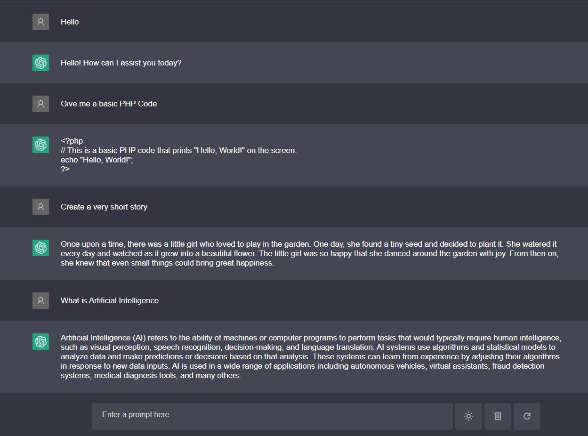

TheDoggyBrad Chat can do anything, and much more—often with fewer instructions. It is able to solve logic problems, determine cause and effect, understand the intent of text, produce creative content, explain character motives, and handle complex summarization tasks. But..... wait this is optimized to avoid the chatbot to produce randomized results and repetitive results. This could be possibly better than ChatGPT (in some areas).
✓Ready for mass usage (20 API Keys are used in thedoggybrad.github.io/chat)
✓Friendly for those who will fork this software
✓Delete, Refresh and Dark/Light Mode functionalities
✓Tuned up for the best experience
•Model Name: GPT 3.5 Turbo (Continuously Updated Version)
•Internal Name: gpt-3.5-turbo
•Maximum Characters per Response: 2500 Characters
•Training Data: Up to September 2021
•Description: The most capable model and can do any language task with better quality, longer output, and consistent instruction-following. Also supports some additional features such as inserting text.
•GPT Version: ChatGPT 3.5 (Turbo)
•Limitations:
✓2500 Maximum Characters per Response (To prevent API abuse)
✓Cannot remember previous conversation (due to use of API and use of browser cache instead of accounts/database)
✓May produce inaccurate, wrong or inappropriate content or results (No computer program is perfect!)
Q: What if I get "Oops! Something went wrong while retrieving the response. Refresh the page and please try again."?
A: Simple, just refresh the page and re-enter your input. The refresh will change the API key you are using via a randomizer. Just use the refresh button on after the delete button. This software uses multiple API keys (if you use my software hosted on Github, if not it will be singular).
Since this is an open-source project dedicated to the public domain, I want everyone to be fair to every users of this software. Here are my own set of conditions to use this software fairly:
1.) Everyone must not abuse or misuse this software especially that this software uses the author's API keys (unless you forked the project and used your own API keys).
That's all, I do not have anything special in my terms and conditions for using this software. I do not just wanted this software's API key to be abused.
✓For the side of TheDoggyBrad, nothing as in zero.
✓For the side of OpenAI, please read their own privacy policy on https://openai.com/policies/privacy-policy, its data processing rules on https://openai.com/policies/data-processing-addendum and API Data usage on https://openai.com/policies/api-data-usage-policies
✓For the side of Github Pages and Github, they may collect some analytical data that they can use to check who visit this software using the Github and Github Pages. For Github's privacy statement, please visit https://docs.github.com/en/site-policy/privacy-policies/github-privacy-statement for more details.